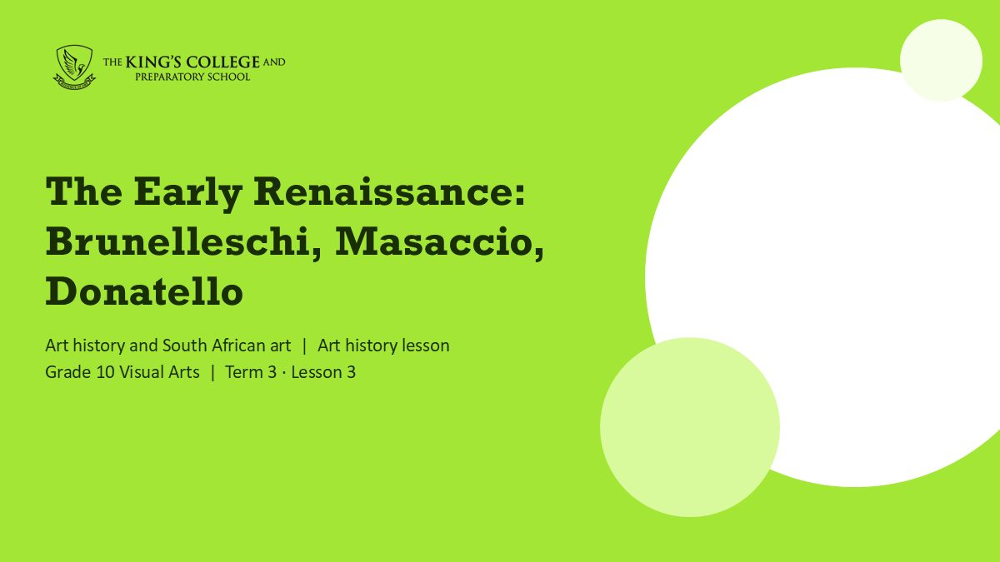

Term 3 · Lesson 3 · Art history lesson
The Early Renaissance: Brunelleschi, Masaccio, Donatello
Start here
Today I will
- Explain what humanism meant for Renaissance artists
- Describe how linear perspective works
- Find the vanishing point in Masaccio's Holy Trinity
How can a flat church wall suddenly look like a deep room you could walk into?
Words to know
- Renaissance
- 'Rebirth': the revival of classical Greek and Roman learning and art from about 1400.
- Humanism
- A movement that studied classical texts and valued human ability and dignity, while remaining Christian.
- Linear perspective
- A mathematical system that creates depth using lines that meet at a vanishing point.
- Vanishing point
- The point on the horizon line where lines going back into space seem to meet.
- Orthogonals
- The lines that lead back into the picture towards the vanishing point.
- Chiaroscuro
- Strong contrast of light and dark used to make forms look solid.
Slides

Notes
Humanism; Brunelleschi's dome and linear perspective; Masaccio's Holy Trinity; Donatello's David.
Three Florentine pioneers
- Brunelleschi (1377 – 1446): Worked out linear perspective (c. 1415 – 1420) and built the dome of Florence Cathedral (1420 – 1436) with a double shell, ribs and herringbone brickwork.
- Masaccio (1401 – 1428): The first painter to use perspective fully. The Holy Trinity (c. 1425 – 1427) seems to open a Roman barrel vault in the wall.
- Donatello (c. 1386 – 1466): His bronze David (probably 1440s) was the first life-size freestanding bronze since ancient times, in classical contrapposto.
- Humanism: Scholars studied Greek and Roman texts and valued human ability. Art showed both faith and Florence's civic pride.
- Patrons: The Medici family, the guilds and the Church paid for buildings and art in Florence.
How linear perspective works
- Horizon line: Set the viewer's eye level as a horizontal line across the picture.
- Vanishing point: Place one point on that line where everything going back into space will meet.
- Orthogonals: Draw lines from the edges of floors, walls and ceilings back to the vanishing point.
- Measured shrinking: Objects get smaller at a steady rate as they move back, so the space feels real.
Find the lines, follow them back, and the vanishing point shows where the artist wanted you to stand.
Practical
You need: Printed copy of the Holy Trinity, ruler, coloured pencil, History booklet
Find the vanishing point in the Holy Trinity
- On your copy, find the edges of the coffered barrel vault (the ceiling squares).
- Use a ruler to extend at least four of these lines downwards in colour until they cross.
- Mark where they meet with a dot: this is the vanishing point. Draw the horizon line through it.
- Notice where the vanishing point is compared to the eye level of someone standing in the church.
- Write two identify, describe, effect sentences about space and chiaroscuro in this fresco.
- Interpret: why would Masaccio want the chapel to feel real to people standing in front of it?
Test yourself
- Explain the term linear perspective and name the artist credited with working it out.
- Identify one way Donatello's David revived classical art.
- Explain why Masaccio's Holy Trinity amazed viewers in the 1420s.
Show answers
1. A mathematical system where receding lines (orthogonals) meet at a vanishing point on the horizon, creating depth on a flat surface; Brunelleschi. 2. Any one: freestanding life-size bronze, contrapposto, classical idealised figure. 3. Its perspective made a flat wall look like a real, deep chapel opening into the church.
Finished early?
Use Brunelleschi's system in a quick drawing.
- Draw a horizon line across a VJ page and mark one vanishing point in the middle.
- Draw a rectangle for the back wall around the vanishing point.
- Draw orthogonals from its corners to the edges of the page.
- Add a floor of tiles that shrink as they move back, and label the vanishing point.